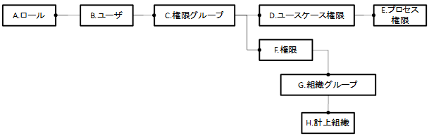

2.1. アクセス権設定の概要¶
Biz∫会計のアクセス権は、以下の関連を持つ情報を用いて制御されます。


各情報の定義、他の情報やアクセス制御機構との関連、ならびに本ドキュメント中の設定手順の記述箇所を以下に示します。
情報名 |
定義 |
他との関連 |
設定手順 |
|---|---|---|---|
ロール |
intra-mart内に定義する業務上の任意の役割。 |
ユーザは複数のロールをもつことができる。 ロールを基準に、メニュー表示、ワークフローのルート、プロセス実行権限が制御される。 |
|
ユーザ |
アカウントとパスワードを持つシステム利用者。 |
複数の組織に所属することができる。 |
|
権限グループ |
権限、組織グループへのアクセス権を扱いやすくグルーピングした単位。 「経理部_社員」「経理部_派遣」など。 |
ユーザには複数の権限グループを付与できる。業務上の権限を包含する業務権限グループ、組織グループのデータへのアクセス権を包含する組織データアクセス権限グループを作成することができる。 |
|
ユースケース |
複数画面からなる業務単位。「仕訳登録」など。 インストール時にプリセットされ、追加や削除はできない。 |
複数のプロセスを包含する。ユースケースへのアクセス権を包含したプロセス実行権限への認可の設定によって、業務へのアクセスが制御される。 |
|
プロセス |
画面内のアクション（イベント）。「印刷処理」など。 インストール時にプリセットされ、追加や削除はできない。 |
ユースケースの構成要素。プロセスへのアクセス権を包含したプロセス実行権限への認可の設定によって、画面中の各アクションの実行可否が制御される。 |
|
権限 |
業務共通的な権限。（組織別の参照権限や更新権限、個人情報の管理権限等）インストール時にプリセットされ、追加や削除はできない。 インストール時にプリセットされ、追加や削除はできない。 |
業務権限グループに包含されて、各アクションにおける業務上の処理可否が制御される。 |
－ |
組織グループ |
計上組織、基本組織をグルーピングした単位。 計上組織の組織グループは、帳票出力時の集計単位として指定できる。計上組織の組織グループは、帳票出力時の集計単位として指定できる。 |
と関連づけられて組織データアクセス権限グループに包含される。同権限グループを付与されたユーザは、この組織グループに所属する組織に計上されるデータへの参照権や更新権を保有することとなる。 権限の判定はシステム日付で行われます。そのため、システム日付時点で組織データアクセス制御が有効な組織グループが権限ありと判定されます。 なお、組織については、システム日付時点で組織データアクセス制御が有効な組織グループにシステム日付時点で所属している組織が権限ありと判定されます。 |
|
計上組織 |
計上組織セットに登録された会計上の組織 |
組織グループと関連づけられる。 |